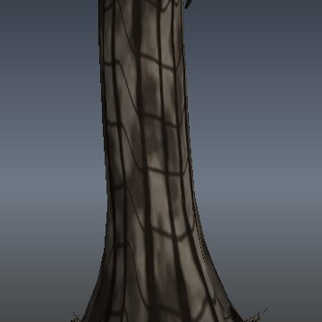
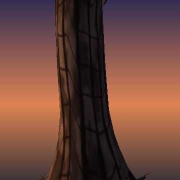

Materials and textures
Each tree has a library of materials. A material has a colour, an optional colour texture and normal map, and settings for game engines. Any number of generators can share one material; generators without a material use the tree's default bark or leaf colour.
Creating and assigning a material
- Select the generator that should use the material, for example the trunk.
- Click + Material in the left panel. ArborStudio creates a bark or leaf material, depending on the generator, assigns it to the selected generator and opens the material editor.
- To use the same material on other generators, select each of them and choose the material in the Material menu at the top of the Properties panel.
To edit a material later, click it in the Materials list, or click Edit… next to the Material menu of a generator that uses it.

Material settings
- Name
- Used as the material name in exports.
- Colour / tint
- The base colour. With a texture, it tints the texture; use white to show the texture unchanged.
- Texture
- A colour image in PNG or JPEG format. Click Choose… to select it and Clear to remove it.
- Normal map
- A tangent-space normal map in PNG or JPEG format. It adds surface detail to the lighting in the viewport and is exported for engines.
- Normal strength 0 to 4
- How strongly the normal map bends the lighting. 1 shows the map as painted.
- DirectX style (flip green)
- Select this for normal maps whose green channel points down (DirectX convention). glTF and ArborStudio expect the OpenGL convention with green pointing up. If the bark looks lit from the wrong side, toggle this setting.
- Roughness 0 to 1
- Surface roughness for physically based shading in engines. Bark is usually close to 1.
- Tiling: around, along 0.05 to 50
- How often a bark texture repeats around each stem (around) and along it (along).
- Cut-out
- Transparent pixels of the texture become holes. Use it for leaf cards.
- Two-sided
- Asks engines to render both faces. Leaf materials are always exported as two-sided.
A material with a texture also has a Leaf atlas section; see Leaf atlases.
The line Used by lists the generators that use the material. Delete material removes it; those generators return to the default colours.
Material gradients
One trunk, branch or root generator can carry several materials that blend into each other along a gradient, for example dark, cracked bark at the foot of a birch that turns into smooth white bark higher up. Select the generator and open Material gradient under its Material.
- Along
- What the gradient follows. Along each stem: 0 at the base of every stem, 1 at its tip. Height (m): metres above the ground, the same on every generator, so the trunk and the roots can share one band. Share of tree height: 0 at the ground, 1 at the top of the tree.
- Layer 1
- The generator's own material, from the start of the gradient.
- Layer 2, 3, …
- Each further layer has a material and the place on the gradient from which it takes over. Click + Layer to add one (up to five layers in all) and 🗑 to remove one.
- Blend width
- The width of each transition, in the units of Along.
- Noise 0 to 1
- Breaks the transition line up: how far a noise pattern moves it, as a share of the blend width.
- Noise size
- The size of the noise patches in metres.
- Contrast 0 to 1
- 0 blends softly over the whole width; 1 makes a sharp, ragged edge, like bark that peels off in patches.
The viewport blends every pixel, so the edge looks the same at every level of detail. The materials' colours, textures, normal maps and roughness all blend.
Gradients in exports
- GLB keeps every material. Each material is its own part of the mesh; where a transition blends two materials, that part is drawn with the first and names the second in its
extras.material_blend, with the place and width of the transition.TEXCOORD_2holds, per vertex, the position on the gradient (x) and the layer value (y). The file'sextras.material_blendstates the formula, so a custom shader can blend exactly like the viewport. - Bake material gradients in the Export menu (
bake_material_blendfor agents) turns the transitions into plain materials instead, for engines without a custom shader: the triangles of each transition get a texture of their own with both materials and the noise painted in, and everything else keeps its layer's material. - OBJ cannot carry blend weights, so OBJ exports are always baked. The baked textures are saved next to the
.objfile. - JSON contains the gradient settings themselves.
How bark textures are mapped
A bark texture wraps once around each stem for each unit of around tiling. Along the stem it repeats once per circumference of the stem at that point, multiplied by the along tiling. This keeps the texture's proportions on thick trunks and thin twigs alike: the bark pattern is smaller on thin branches, as on a real tree. The circumference is measured on the actual surface, including buttress flare and flutes.
Texture coordinates continue across joints, so the bark of a branch flows into its collar, and where branch and parent share a material the bark cross-fades from the parent's into the branch's, so there is no seam where roots and branches meet the trunk. GLB files carry the parent's coordinates and the fade weight in two extra texture coordinate sets, described in the file's extras.joint_crossfade, for engines with a custom shader.



samples/ that you can use to try materials out.Leaf textures
- Select the leaves generator and set its Shape to Card (for leaf textures).
- Click + Material, choose a PNG leaf texture with transparency and select Cut-out.
- Set the colour to white to show the texture's own colours, or tint it.
Each card shows the whole texture, so a texture with several leaves makes a dense crown from fewer cards.
Leaf atlases
A texture atlas holds several leaf pictures in one image. Open the material and its Leaf atlas section, then add one rectangle per picture with + Picture, or Split into a grid… for four equal pictures to adjust. The preview shows the rectangles in yellow and the pivots as red dots.
- x, y, w, h
- The rectangle of one picture in pixels of the texture file, measured from its top left corner.
- pivot
- Where the leaf's stalk meets the twig, in pixels from the rectangle's left and top edges. New pictures hang from the middle of their bottom edge.
- weight
- How often the picture is used compared with the others. 0 leaves it out.
Each leaf shows one picture, picked at random by weight. On Card leaves the card takes the picture's proportions and hangs from its pivot, so wide and narrow pictures are not stretched; the leaf size is the card's height. Other leaf shapes only take the picture's texture coordinates. Leaves keep their picture when the level of detail or the leaf count changes.
Textures in exports
- GLB files contain the textures, so the export is a single file.
- OBJ exports copy the textures next to the
.objfile and reference them from the.mtlfile. - The normal map is exported with its strength, and the colour is exported as the base colour factor.
- glTF expects normal maps with green pointing up. A map marked DirectX style (flip green) has its green channel flipped as it goes into a GLB, and the material's
extras.normal_flip_greensays so. OBJ exports copy the file as it is and note the convention in the.mtlfile.